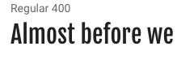
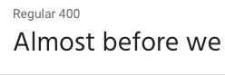
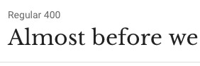
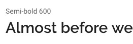
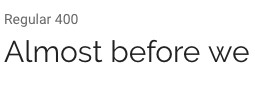
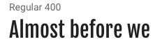
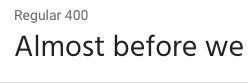
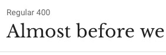
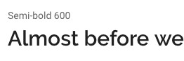
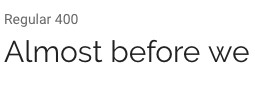

Font Choice
- Footer
Fjalla One. 
- Primary Navigation
Hind. 
- Heading 1
Libre Baskerville. 
- Heading 2
Raleway semi-bold. 
- Primary Text
Raleway. 
The following page is a description of the various elements of typograpy that will be used throughout the site. This will help in keeping the style consistent and in giving a visual contrast of text that is both readable and in accordance with the design.
Fjalla One. 
Hind. 
Libre Baskerville. 
Raleway semi-bold. 
Raleway. 